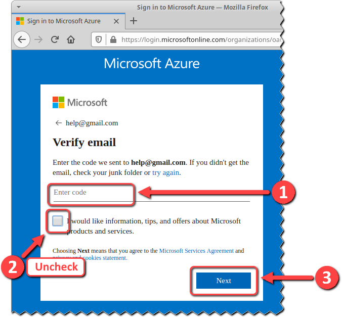
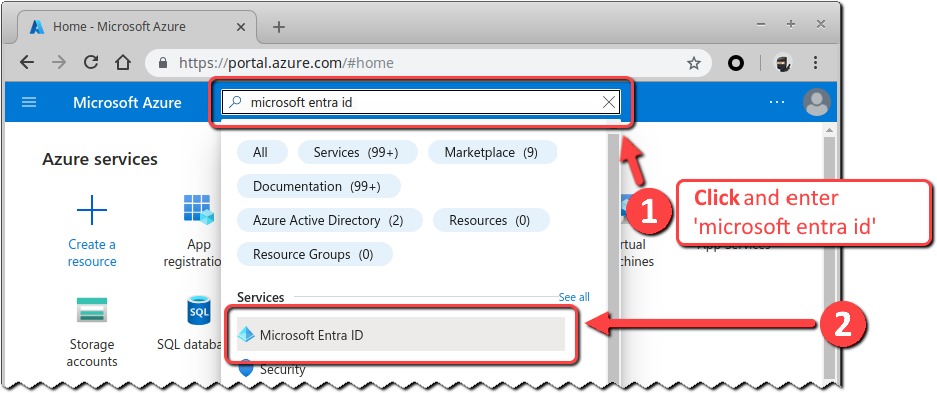
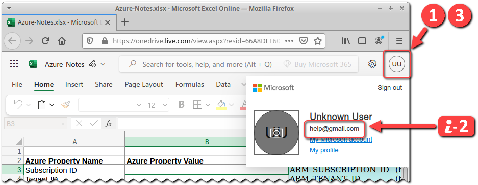
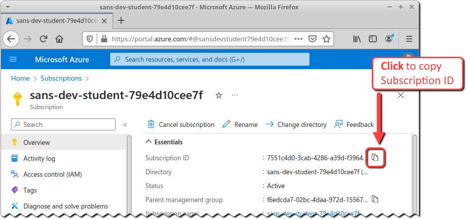
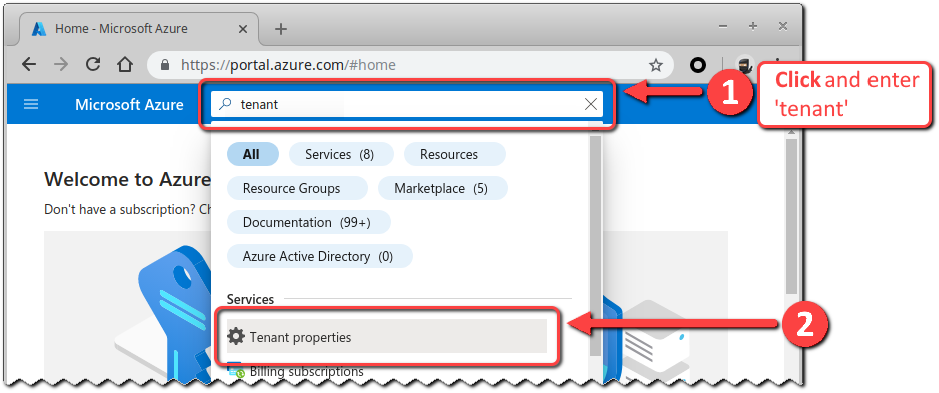
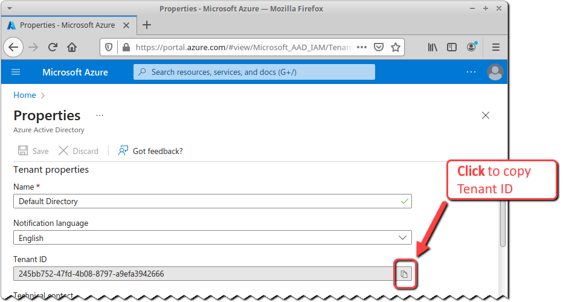

Azure Account Setup
Objectives
- Prepare an Azure account and subscription to use for the labs.
- Create a workbook to keep notes throughout the labs, starting with recording your subscription and tenant IDs.
Introduction
In this lab, we'll get ready for our exploration by making sure that you have a valid Azure account and subscription to use for the rest of the labs.
An Azure account is associated with an email address and includes contact information and billing details.1
A subscription is an agreement with Microsoft to use one or more Microsoft cloud platforms or services, for which charges accrue based on either a per-user license fee or on cloud-based resource consumption.2 All Azure resources are associated with one and only one subscription, which in turn is associated with one and only one account.1 Without a subscription you won't be able to access the Azure cloud services!
A Microsoft Entra ID tenant is a reserved Microsoft Entra ID service instance that an organization receives and owns once it signs up for a Microsoft cloud service such as Azure, Microsoft Intune, or Microsoft 365. Each tenant represents an organization, and is distinct and separate from other Microsoft Entra ID tenants.3
Lab Preparation
If you're reading these instructions from the online electronic workbook (EWB), then you're connected to the Internet and able to browse the Web - so you should be ready to go!
Step-by-Step Instructions
1. Decide: Create or Re-Use Account?
1. Decide: Create or Re-Use Account?
Completing the workshop labs requires that you have an active Microsft Azure account. To create a new Azure account, you'll need an email address that isn't already associated with an Azure account, and to follow instructions to set up an Azure account for that email address.
However, Microsoft Azure is one of the most common cloud platforms that we will encounter4 and you may already have an Azure account. You can use that account if:
-
You are able to create, configure, and tear down an Azure subscription in that Azure account.
This requires that you have the Owner or Contributor role for the account.
-
You are willing to create, configure, and tear down an Azure subscription in that Azure account.
You may not want to be making changes like this to an Azure account used for production purposes -- or you might just be paranoid about making a mistake!
-
You are okay with the potential fees associated with using Azure resources in your existing Azure account.
New Azure accounts receive a Free Trial subscription with a $200 USD credit to use in the first 30 days, which is more than enough for this lab. If you use an existing Azure account and have exhausted your credit or are past the first 30 days, then you may incur some fees!
During testing, the fees to execute these labs over the period of one week were under $0.50 (50 cents) USD.
Pick an option:
-
To create a new Azure Account, then move on to task 2. Create an Azure Account.
-
To use an existing Azure account, then jump to task 3. Use an Existing Azure Account.
2. Create an Azure Account
2. Create an Azure Account
Follow these steps to create a new Azure account for these labs.
If you instead wanted to use an existing Azure account, then jump to task 3. Use an Existing Azure Account.
Watch Out for Fees!
New Azure accounts receive a Free Trial subscription with a $200 USD credit to use in the first 30 days, which is more than enough for this lab. But be mindful of fees that you may incur after the Free Trial subscription expires!
-
Browse to https://portal.azure.com.
URL
https://portal.azure.com -
If you are already logged into a Microsoft account, then you will be redirected to the Azure portal home page.
Click on the account name near the top-right corner of the web page, and then click on the Sign in with a different account link.
-
If you have previously logged into a Microsoft account from this browser, then you will be presented with a Pick an account dialog.
Click on the Use another account option.
-
You will be presented with a Sign in dialog. Click on the Create one! link.
-
You will be presented with a Create account dialog and prompted to enter an email address.
Enter an email address that is not already associated with an Azure account, and then click on the Next command button.
Dots in Gmail Addresses
If your Gmail address is already associated with an Azure account, then you can register a new Azure account with a variant of your Gmail address by inserting one or more period characters inside the email address.
An Internet email address or 'addr-spec' consists of a 'local-part' (e.g., mailbox name), followed by an '@' symbol, followed by a domain.5 For example: 'help@gmail.com' consists of a local-part of 'help' and a domain of 'gmail.com'.
Gmail completely ignores any and all period characters inside the local-part.6 For example, email sent to the following email addresses will all be delivered to the same Gmail account:
help@gmail.com he.lp@gmail.com h.e.l.p@gmail.comHowever, most web services - including Microsoft's Azure account registration - treat these as separate email addresses for purposes of registration and account management.
For example, if you already have an Azure account associated with 'help@gmail.com', then you can create a new Azure account associated with 'he.lp@gmail.com'.
One downside of this technique: Microsoft may not grant the "$200 for the first 30 days" credit to new accounts that (ab)use this feature.
Getting a New @outlook.com or @hotmail.com Email Address
You can also click on the Get a new email address link to get a new @outlook.com or @hotmail.com email address. That option requires a registration and verification process that is not covered in these instructions.
-
You will be presented with a Create a password dialog and prompted to enter a new password.
Enter a strong password or (better yet) passphrase, and click on the Next command button.
Strong Passwords and Passphrases
As of 2024-05-15, this dialog's strong password requirements were:
Passwords must have at least 8 characters and contain at least two of the following: uppercase letters, lowercase letters, numbers, and symbols.
We strongly recommend using a strong but easy to guess passphrase, in the form of a sentence that readily meets these requirements but is easy to remember. The dialog does accept spaces and punctuation as special characters, so using a sentence is supported.
-
You may be presented with a What's your name? dialog and prompted to submit your first and last name. Enter your information and click on the Next command button.
-
You will be presented with a What's your birthdate? dialog and prompted to submit your country/region and birthdate. Enter your information and click on the Next command button.
-
You will be presented with a Verify email dialog, and a confirmation email will be sent to your email address.
Enter the security code from the confirmation email.
Uncheck the check box to receive "information, tips, and offers about Microsoft products and services."
Click on the Next command button.

-
You will be presented with a puzzle that you must complete to verify you are not a robot. Follow the instructions to complete the puzzle.
-
If you have previously logged into a Microsoft account from this browser, then you will be presented with a Pick an account dialog. Click on the account that you just created.
-
You will be presented with the Azure portal home page, with a 'Welcome to Azure' message and an option to 'get started'. Click on the Cancel command button.
Congratulations! You just created an Azure account!
Now jump to task 5. Create an Azure Subscription.
3. Use an Existing Azure Account
3. Use an Existing Azure Account
Follow these steps to login to an existing Azure account.
If you instead wanted to create a new Azure account, then jump back to task 2. Create an Azure Account.
Watch Out for Fees!
New Azure accounts receive a Free Trial subscription with a $200 USD credit to use in the first 30 days, which is more than enough for this lab. If you use an existing Azure account and have exhausted your credit or are past the first 30 days, then you may incur some fees!
During testing, the fees to execute these labs over the period of one week were under $0.50 (50 cents) USD.
Before you can login to your existing Azure account, you'll need to collect your Azure account authentication information. For purposes of illustration, we're assuming that you can authenticate using just your email address and password.
-
Once you acquire your Azure account credentials, you need to login! Open a web browser and browse to the Azure portal at https://portal.azure.com.
URL
https://portal.azure.com -
If you are already logged into a Microsoft account, then you will be redirected to the Azure portal home page.
Click on the account name near the top-right corner of the web page, and then click on the Sign in with a different account link.
-
If you have previously logged into a Microsoft account from this browser, then you will be presented with a Pick an account dialog.
Click on the Use another account option.
-
You will be presented with a Sign in dialog. Enter your Azure account email address and click on the Next command button.
-
You will be presented with an Enter password dialog. Enter your password and click on the Sign in command button.
-
If you are prompted by the browser to "Save password?" then click on the Save command button.
-
If you are presented with a Stay signed in? dialog, then check the Don't show this again dialog and click on the Yes command button.
-
You will be redirected to the Azure portal home page. If you are presented with a 'Welcome to Azure' message and an option to 'get started', then click on the Cancel command button.
-
Now you need to confirm that this account is assigned the Global Administrator role. Start by accessing the Azure portal's information on your Microsoft Entra ID environment.
Click on the search bar at the top of the page, enter the text 'microsoft entra id', and select the Microsoft Entra ID service from the drop-down.
Search Text
microsoft entra id
-
The Default Directory page will open. Click on the Roles and admininstrators option in the left-hand pane.
-
The Roles and administrators page will open. You should see that your account has the role of Global Administrator.
If your account does not have the role of Global Administrator, then you will probably need to jump back to task 2. Create an Azure Account and create a new Azure account.
Congratulations! You have logged into your Azure account!
This task probably wasn't that challenging -- but it is the foundation upon which the rest of our work in Azure will be built!"
Now move on to task 4. Decide: Create or Re-Use Subscription?.
4. Decide: Create or Re-Use Subscription?
4. Decide: Create or Re-Use Subscription?
If you used an existing Azure account, then you'll probably still want to create a new subscription so that the resources for these labs are separate from your existing Azure resources. But who knows - maybe you like to live dangerously!
Pick an option:
-
To create a new Azure subscription, then move onto task 5. Create an Azure Subscription.
-
To use an existing Azure account, then jump to task 6. Use an Existing Azure Subscription.
5. Create an Azure Subscription
5. Create an Azure Subscription
Your next task is to create an active Azure subscription for your account!
If you instead wanted to use an existing Azure subscription, then jump to task 6. Use an Existing Azure Subscription.
At this point you should be logged into and viewing the Azure portal home page (https://portal.azure.com).
-
Click on the search bar at the top of the page, enter the text 'subscriptions', and select the Subscriptions service from the drop-down.
Search Text
subscriptions
-
The Subscriptions page will open. Click on the Add option.
-
If a 'select an offer for your subscription' prompt appears on the right hand side of the page, click on the Start free command button.
-
Your browser may be redirected and require you to pick an account for login. If you have multiple Azure accounts, be sure to select the correct account.
-
You will be presented with a series of pages to Create your Azure free account. This process will require you to input your name, full mailing address, email address, phone number and credit card. Follow all directions and complete all information.
Some useful notes:
-
Phone Number Verification is required, via text message or a voice call.
-
You must agree to the Customer agreement.
-
You do not have to agree to let Microsoft share your information with partners.
-
Credit card information is used for identity verification and will not be charged during the free credit trial.
Watch out for Fees!
If you continue using Azure with this account after the 30-day trial, then you may incur fees!
Virtual Credit Card Numbers
Some credit card issuers allow you to generate 'virtual' card number associated with your primary account, often with features such as an earlier expiration date than your primary card number, a lower credit limit than your primary card number, and association with a single merchant so that the card number can't be stolen and re-used at another merchant. You may want to check wheter your credit card issuer provides this service, and use a virtual card number here.
Azure Cost Monitoring
Azure allows you to monitor cost and usage of your Azure account, including receiving alerts when costs exceed a user-defined threshold.7
-
Decline technical support if you are prompted to add it to your subscription
-
At the end of the subscription registration process, you may be prompted for final verification and/or to select your Azure account again.
-
When the subscription registration is complete, your browser will be redirected to an Azure Quickstart Center page.
-
-
Click on the search bar at the top of the page, enter the text 'subscriptions', and select the Subscriptions service from the drop-down.
Search Text
subscriptions -
On the Azure portal's Subscriptions page, you should see the new subscription with a title similar to 'Azure Subscription 1', and a status of 'Active'.
Congratulations! You now have an active Azure subscription!
Now jump to task 7. Open Azure-Notes Workbook.
6. Use an Existing Azure Subscription
6. Use an Existing Azure Subscription
This task guides you through finding your existing subscription.
If you instead wanted to create a new Azure subscription, then jump back to task 5. Create an Azure Subscription.
At this point you should be logged into and viewing the Azure portal home page (https://portal.azure.com).
-
Click on the search bar at the top of the page, enter the text 'subscriptions', and select the Subscriptions service from the drop-down.
Search Text
subscriptions -
On the Azure portal's Subscriptions page, you should see at least one subscription with a long hexadecimal Subscription ID and a Status of 'Active'.
If you see more than one active subscription, then you'll need to drill into each of those subscriptions to identify which subscription you want to use.
Make note of the desired subscription name and ID!
Now move on to task 7. Open Azure-Notes Workbook.
7. Open Azure-Notes Workbook
7. Open Azure-Notes Workbook
This series of labs references a Microsoft Excel workbook that you use to record information about your Azure account and environment. The workbook is available online as a read-only document, so you'll want to make a copy in your own Microsoft account's OneDrive.
At this point you should be logged into the Azure portal and viewing the Subscriptions page (https://portal.azure.com/#blade/Microsoft_Azure_Billing/SubscriptionsBlade).
-
In the same browser you are using to access the Azure portal, open a new tab.
-
In the new tab, browse to https://bit.ly/azure-notes2.
URL
https://bit.ly/azure-notes2 -
The authentication to the Azure portal and Microsoft Excel online are independent, so you will be prompted to authenticate to your Microsoft account.
Complete the authentication prompts, including answering 'Yes' on the Stay signed in? dialog.
-
The
Azure-Notes.xlsxworkbook will open in the web browser. -
Before working with the workbook, double-check to make sure that you are accessing Microsoft Excel online with the correct Microsoft account.
Click on the user initials near the top-right corner of the web application window. The displayed email address should match the email address associated with your Azure account.
If it does, then click on the user initials again.

If the displayed email address does not match the email address associated with your Azure account, then:
- Click on the Sign out link.
- Close the browser tab in which Microsoft Excel online was opened.
- Go back to this task's step 1.
-
Now let's create a copy of the Azure-Notes workbook that you can edit.
Click on the Edit a copy button, near the top-right corner of the web application window.
A copy of the workbook will be saved to your Microsoft account's OneDrive. After a minute, the window will refresh to allow you to work with that copy of the workbook.
If the window doesn't refresh after a minute, then simply refresh your browser window.
Conserving Screen Real Estate
You may find it easier to work with the workbook by changing Microsoft Excel online's Show Ribbon option to Automatically Hide.
You can reveal the ribbon by hovering hte mouse pointer over the user initials near the top-right of the web application window.
8. Record Subscription and Tenant IDs
8. Record Subscription and Tenant IDs
We'll need the subscription's subscription ID and tenant ID in later labs, so let's take a moment now to save those values in the Azure-Notes workbook.
-
Switch back to the browser tab accessing the Azure portal's Subscriptions page. On that page, find the subscription that you are using for this workshop and click on the associated Subscription name to view the subscriptioion details.
-
On the subscription details web page, hover the mouse pointer to the right of the Subscription ID value, and click on the 'copy' icon.

-
Switch to the Azure-Notes workbook, and paste the subscription ID into the appropriate Azure Property Value cell.
-
We also want to save the tenant ID. Switch back to the Azure portal browser tab.
Click on the search bar at the top of the page, enter the text 'tenant', and select the Tenant properties service from the drop-down.
Search Text
tenant
This will open the Tenant Properties page.
-
Find the Tenant ID field, hover the mouse pointer to the right of the tenant ID value, and click on the 'copy' icon.

-
Switch to the Azure-Notes workbook, and paste the tenant ID into the appropriate Azure Property Value cell.
Congratulations and nice work! You have successfully completed all the tasks in this lab, and are ready for the remaining Azure labs.
Conclusion
In this lab, you either:
-
created an Azure account and subscription; or
-
logged into an existing account and either:
- created an Azure subscription;
- or verified that you can access an existing subscription.
You then saved a copy of a Microsoft Excel workbook in your OneDrive storage, and updated it with your Azure subscription ID and tenant ID.
In the next Azure lab, you'll leverage your subscription by creating and using Azure resources!
-
Microsoft. (2023, October 09). Azure fundamental concepts. Microsoft Learn. Retrieved May 18, 2024 from https://learn.microsoft.com/en-us/azure/cloud-adoption-framework/ready/considerations/fundamental-concepts. ↩↩
-
Microsoft. (2023, October 20) Subscriptions, licenses, accounts, and tenants for Microsoft's cloud offerings. Microsoft Learn. Retrieved May 18, 2024 from https://learn.microsoft.com/en-us/microsoft-365/enterprise/subscriptions-licenses-accounts-and-tenants-for-microsoft-cloud-offerings?view=o365-worldwide. ↩
-
Microsoft. (2023, December 21). Create an Azure Active Directory tenant to use with Power BI. Microsoft Learn. Retrieved May 18, 2024 from https://learn.microsoft.com/en-us/power-bi/developer/embedded/create-an-azure-active-directory-tenant. ↩
-
Megaport. (2022, November 8). AWS, Azure, and google cloud: The big three compared. Megaport. Retrieved May 18, 2024 from https://www.megaport.com/blog/aws-azure-google-cloud-the-big-three-compared/. ↩
-
Resnick, P. (2001, April). Internet Message Format. IETF Datatracker. Retrieved May 18, 2024, from https://datatracker.ietf.org/doc/html/rfc2822#section-3.4.1. ↩
-
Google. (n.d.). Dots dont matter in Gmail addresses - gmail help. Google. Retrieved May 18, 2024 from https://support.google.com/mail/answer/7436150?hl=en#:~:text=If%20someone%20accidentally%20adds%20dots,john.smith%40gmail.com. ↩
-
Microsoft. (2024, April 7). Azure monitor cost and usage. Microsoft Learn. Retrieved May 18, 2024 from https://learn.microsoft.com/en-us/azure/azure-monitor/cost-usage. ↩